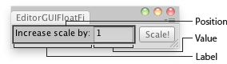

EditorGUI.FloatField
public static float FloatField(Rect position,
float value,
GUIStyle style = EditorStyles.numberField);
public static float FloatField(Rect position,
string label,
float value,
GUIStyle style = EditorStyles.numberField);
public static float FloatField(Rect position,
GUIContent label,
float value,
GUIStyle style = EditorStyles.numberField);
Parameters
| position | Rectangle on the screen to use for the float field. | |
| label | Optional label to display in front of the float field. | |
| value | The value to edit. | |
| style | Optional GUIStyle. |
Returns
float The value entered by the user.
Description 描述
Makes a text field for entering floats.

Float Field in an Editor Window.
using UnityEngine; using UnityEditor;
public class EditorGUIFloatField : EditorWindow { float sizeMultiplier = 1;
[MenuItem("Examples/Scale selected Object")] static void Init() { var window = GetWindow<EditorGUIFloatField>(); window.position = new Rect(0, 0, 210, 30); window.Show(); }
void OnGUI() { sizeMultiplier = EditorGUI.FloatField(new Rect(3, 3, 150, 20), "Increase scale by:", sizeMultiplier);
if (GUI.Button(new Rect(160, 3, 45, 20), "Scale!")) { Selection.activeTransform.localScale = Selection.activeTransform.localScale * sizeMultiplier; } } }